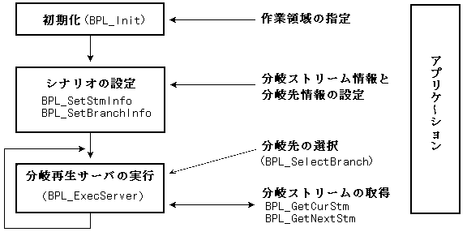
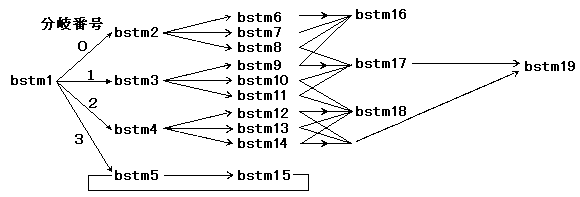
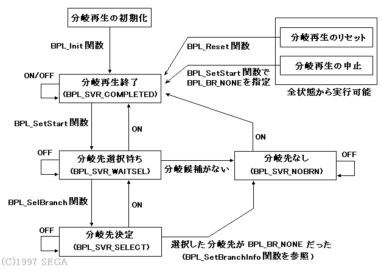

★PROGRAMMER'S GUIDE
★分岐再生ライブラリ
★PROGRAMMER'S GUIDE
★分岐再生ライブラリ
図3.1 処理の流れ

図3.2 ストリームの分岐

［注意事項］ １つの分岐候補内に同一のストリームが存在してはいけません。同じストリームを 別のストリームハンドルでオープンしても、同時にはデータが読込まれないためです。 後からオープンしたストリームは絞りの最後につながるので、先にオープンした ストリームからデータを取り出すことができます。したがって、分岐候補内に現在と 同じストリームが存在してもかまいません。 《図3.2の例》 ・bstm6〜8中に同じストリームが重複してはいけませんが、 bstm2と同じストリームがあってもかまいません。
状態 | 説明 |
|---|---|
分岐再生終了 | 分岐再生が終了しました。 |
分岐先選択待ち | 分岐候補を先読みしていますが、分岐先が選択されていません。 |
分岐先決定 | 分岐候補の中から分岐先が選択されました。 |
分岐先なし | 現在のストリームに対する分岐候補や分岐先が存在しません。 |
図3.3 分岐再生の状態遷移図

分岐ストリーム | 分岐実行前 | 分岐実行後（切り替え処理後） |
|---|---|---|
現在のストリーム | A | B |
分岐先のストリーム | B | 次の分岐先を選択するまで未定 |
タイミング | 説明 |
|---|---|
自然切り替え | ストリームAのデコードが終了したら、分岐先のストリームBに切り替えます。 |
強制切り替え | ストリームAのデコード途中でも、強制的に分岐先のストリームBに切り替えます。 |
★PROGRAMMER'S GUIDE
★分岐再生ライブラリ